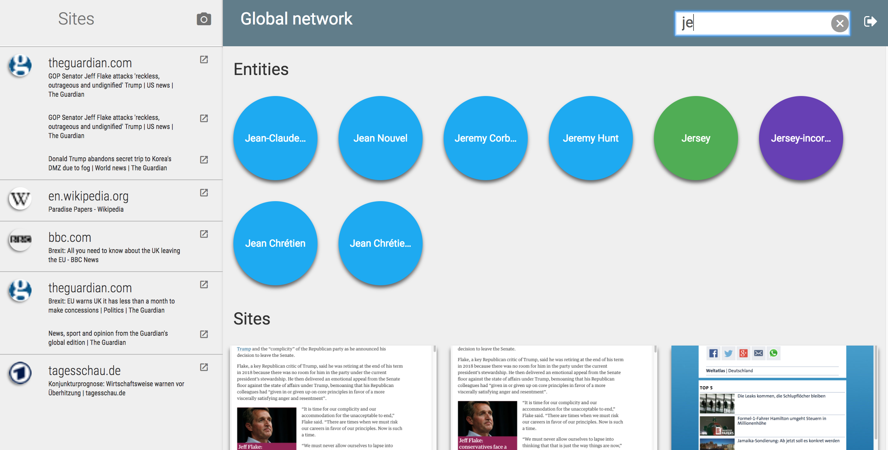
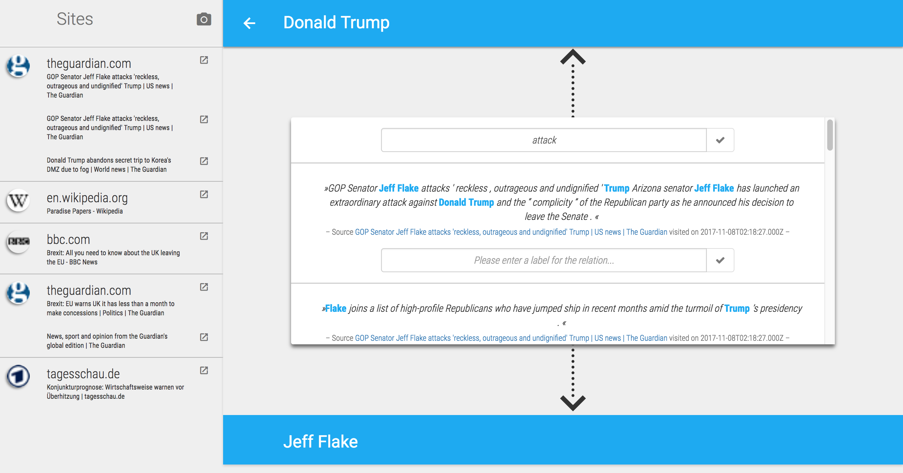
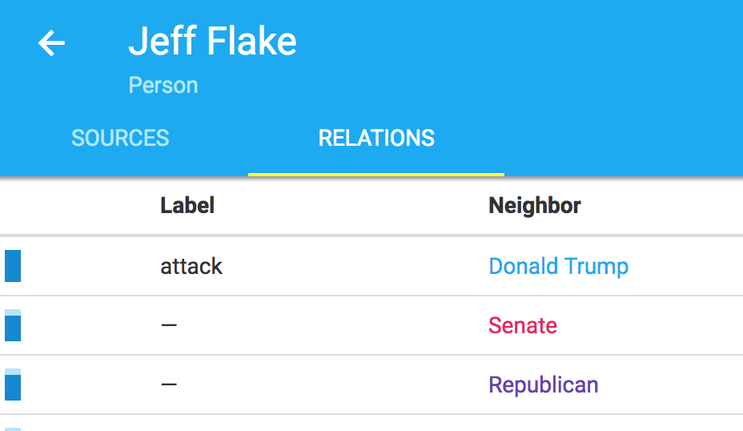
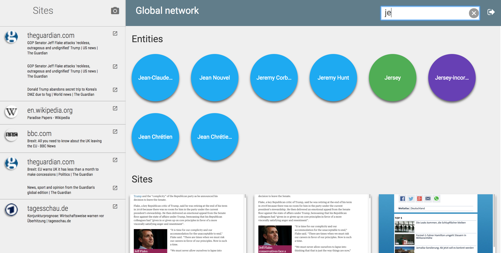
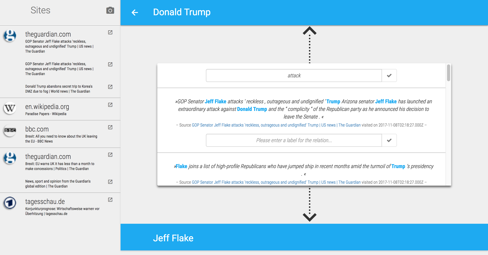
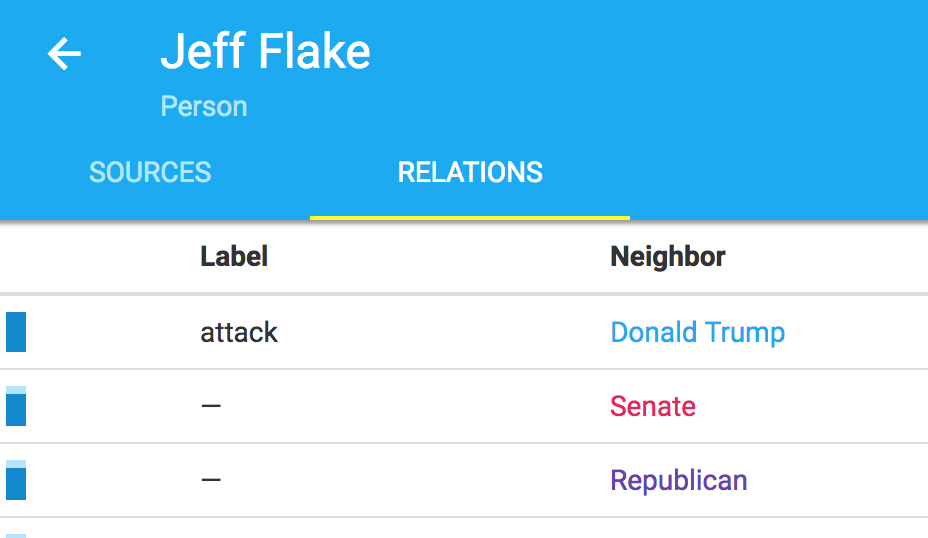

About Storyfinder
Personalized Knowledge Base Construction and
Management by Browsing the Web
The web with its sheer unmeasurable speed of broadcasting new data and its vast quantity of available knowledge is the first choice for information seekers. It is a user’s privilege to read or skim a webpage or bookmark it for later reference. Considering that the human memory can be deceptive, it also is a user's obligation to keep information ordered and easily accessible for later reference.
Storyfinder is an application that includes a browser plugin and a server backend in order to identify and manage the information found in a web page. It highlights named entities and keywords in a currently visited webpage and provides an additional graph view of them. You can edit the nodes and edges, combine web page graph views and search for entities and relations.
Stroryfinder keeps the information you extracted found in webpages managed and provides alternative views of data for easy access.
 




